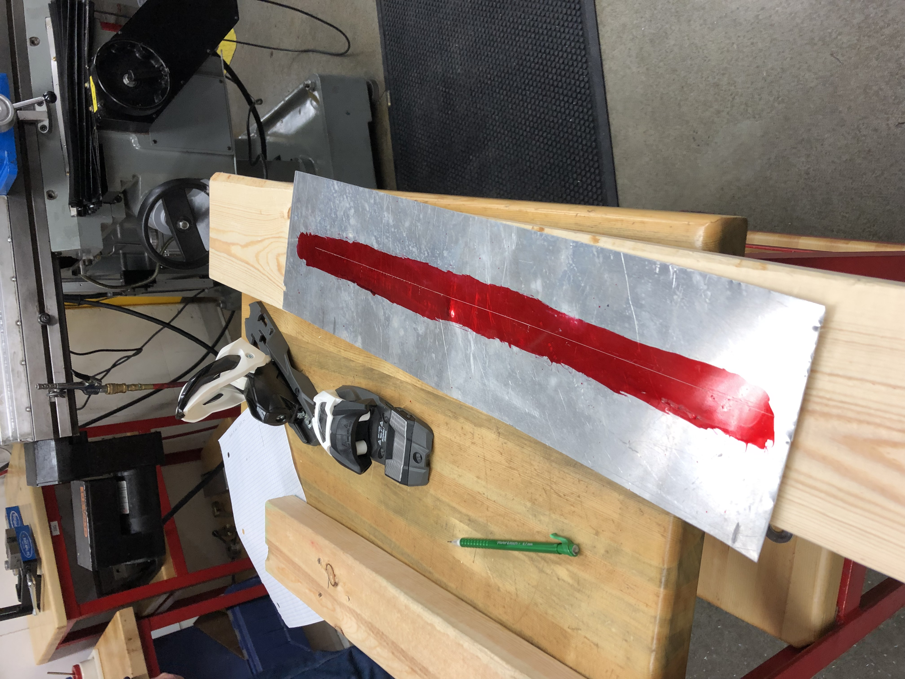
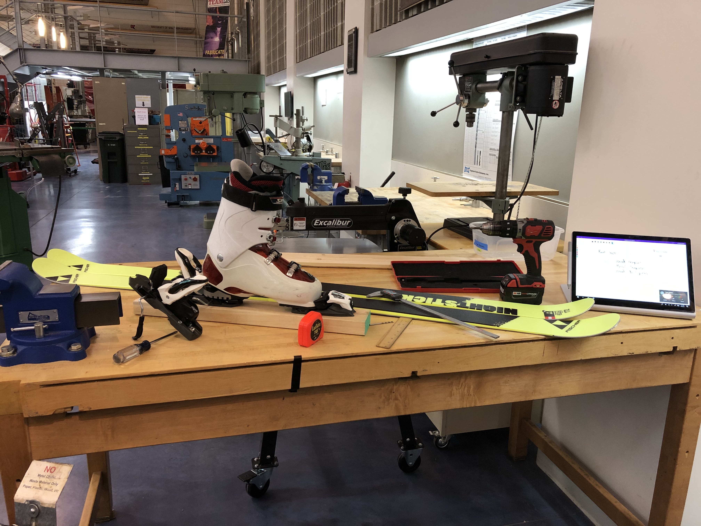
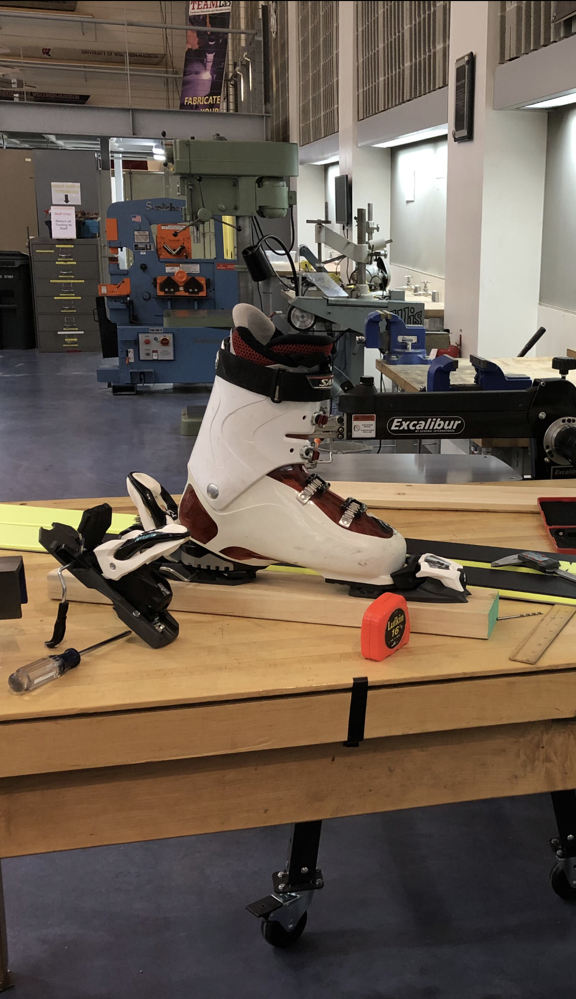

Introduction
Background
Typically to get your downhill skis mounted, a person would bring your skis, bindings, and boots to a ski shop and pay $30 to $60 for a certified ski technician at the shop to complete the mounting and DIN setting process. Often times if you purchase a pair at a ski shop they will do the mounting work for free. Freshman year of college I decided to take it upon myself to save a couple bucks and mount my skis myself. I have done ski technician work in the past, so I am familar with how the "pros" do it, and felt confident I could replicate the process and still produce a secure and safe ski.
There are two tools that severely inhibited me from completing the ski mounting work on my own. The first is a ski jig, which is an adjustable template that allows you to drill the required hole pattern for the bindings perfectly. These can be sourced online for around $80 on the low end but most likely closer to $150 or so. The only downside to purchasing one of these is that they often only have the hole pattern needed for one specific type of binding. Hole patterns vary even across the same manufacturers binding products. If you purchase one of these, you will most likely only be able to mount one specific type of bindings.
The second tool is an alpine drill bit. These are special drill bits that have a very pronounced lip that acts as a stop. This prevents you from drilling through your ski, which would suck for your ski!
Motivations
Really I
Resources needed
Below is a list of resources I used in my project. There are many ways to approach this project, and depending on your craftsmanship skills you may be able to complete this project without some of the tools I used, like a drill press or the scribe and ink.
| Thin aluminum (or any metal) sheet |
| Metal scribe and ink |
| Drill press |
- Drill press
- Alternatively, a hand drill with the specialized bit
Implementation / Building
Prepping your template

Test piece


Conclusion
I was able to succesfully mount these skis!
.jpg)